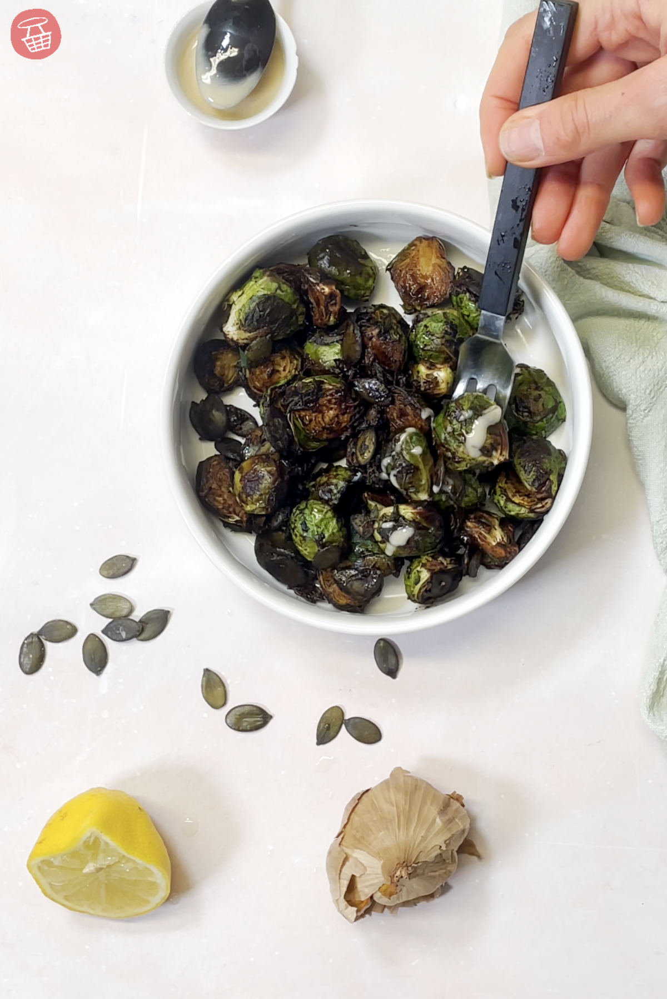

Home
Choux de Bruxelles à l'ail noir

Description
Une recette qui vous fera aimer les choux de Bruxelles !
Ingrédients
- Choux de Bruxelles
- Ail noir
- Beurre salé
- Citron
Etapes
- Nettoyer et éplucher les choux de Bruxelles, puis les trancher en deux
- Faire revenir les choux dans une poêle avec du beurre salé
- Ajouter l'ail noir grossièrement haché en fin de cuisson
- Servir avec un filet de jus de citron